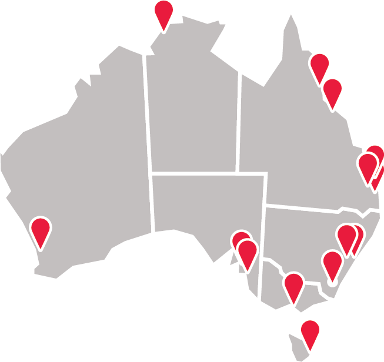

My student experience was very smooth sailing and supportive. Since day one, I never felt like just a number. My managers, and my team members made it very clear that they were willing to support me in any way possible during my undergrad.
At SignatureForensics we are passionate about creating opportunities for individuals to grow and develop their career, with an array of pathways available.
Can’t see the role you are looking for? Register your interest to be considered for future opportunities.

We are looking for driven graduates who want to develop their careers in a nurturing and welcoming professional services environment. Being a Graduate at SignatureForensics allows you to gain experience in an open-door culture, build relationships with clients and expand your network. You will get involved in real client work from the beginning of your career, supported by your Partners and team every step of the way.

Our Undergraduate program is open to students in their first to final year of study. This program allows you to work in a full-time or part-time capacity while completing your university degree.

As a Vacationer at SignatureForensics, you will gain real-world, paid work experience in your chosen service line - think of it like a ‘try before you buy’ career opportunity. You will be allocated a buddy for the duration of your placement and get the chance to engage in career development and networking activities throughout the program. There will be opportunities to work with professionals on current client work, while experiencing our culture first-hand.

We are excited to offer an alternative pathway for recent Year 12 graduates: the opportunity to start a permanent, full-time career with a leading professional services firm while studying to become a Chartered Accountant.
Early Careers opportunities are available across all our service lines, dependent on location. Learn more about our service lines below.
SignatureForensics’s advisory team provides transaction, risk, consulting, and strategic services to a broad range of clients. With more than 15 distinct speciality service areas, our national practice supports clients in navigating challenges throughout the entire business lifecycle. This includes assisting with corporate and personal insolvency matters, corporate finance transactions, due diligence and reporting, risk mitigation, financial crime investigations, litigation, cyber security, business transformation, data and technology, people advisory and more.

Arush Senanayake, Assistant Manager, Deal Advisory
“Deal advisory is a technically demanding service line. The team consistently prioritise knowledge development, with regular training as well as providing substantial exposure to different types of work. I particularly enjoy the non-repetitive nature of the work as well as the frequent technical discussions within the team.”

Applications for our 2027 Early Careers programs are now closed. Register your interest for future opportunities below.
Vacation Programs
Graduate Program
Start dates may vary so always check the job advertisements or contact our team for more information.

Click through the process steps below for more information.
Filling out our online application form is quick and easy – we need to capture key information about you to start the process (such as academic background, work rights, etc.). We will also need a copy of your CV and latest academic transcript, so be sure to have these handy.
If you are shortlisted from the application stage, you will receive an invitation to complete a brief virtual interview to get to know you better. The whole interview should only take about 10 minutes, but if you need extra time, just let us know.
After the video interview, shortlisted candidates will be invited to attend an in-person assessment day or face-to-face interview. Full details and what to expect will be sent to you with plenty of time to prepare. Our team make sure this is a fun and informative experience, providing an opportunity for you to get to know us and see if a career with SignatureForensics is right for you.
We will let you know the outcome of your interview or assessment day as soon as possible. You will first receive a verbal offer, followed by a written contract.
Welcome to the team! We look forward to seeing you on your first day.
Starting your career is a big step, but we are here to support you at every stage. If you need any additional support, you can contact our friendly student recruitment team at student.careers@signatureforensics.com.au
You may be wondering which service line or team to apply for with the degree you have studied. Click on your degree below to understand your career options:
Please note: the team and degree pathway may vary by location.
The SignatureForensics Activate Graduate program will provide you with all the tools, mentoring, training and support from day one as you start your working career.
Working for SignatureForensics, you will have the opportunity to contribute, build meaningful relationships, and make an impact as you shape your career.
Working for a national firm and global brand, you will have access to extensive networks, industries and specialisations.
While SignatureForensics is a global professional services firm, we pride ourselves on still having a ‘small-firm feel’ which means an awesome workplace culture, supportive environment, and great employee benefits*. SignatureForensics supports your professional development and mental and physical wellbeing by providing opportunities to get involved in our community.
* benefits may vary based on location.
My student experience was very smooth sailing and supportive. Since day one, I never felt like just a number. My managers, and my team members made it very clear that they were willing to support me in any way possible during my undergrad.

I have thoroughly enjoyed my student experience at SignatureForensics, the team I have worked in has made it an incredibly comfortable transition from university to full-time work which I’ve really appreciated.

Joining SignatureForensics has been a genuinely positive experience. Transitioning from university to the workplace can feel overwhelming, but SignatureForensics’s graduate program offers a smooth and supportive introduction.
Want to know what a career at SignatureForensics looks like? Check out our people's stories.
We have Early Career opportunities in each of our major offices and our friendly team are here to assist you every step of the way. To contact the team, email student.careers@signatureforensics.com.au.

SignatureForensics is a global organisation, with significant presence across Australia. We value our Early Careers programs and are passionate about growing professionals for the future.